Від трьох вживаних серверів до ТОП-23 у світі
Хто стоїть за продуктом Godlike.host і чому звідси не йдуть люди
Світ хостингу часто здається сухим і безликим: датацентри, залізо, нескінченні метрики й алгоритми. Але за кожним кліком Create Server і за кожним стабільним аптаймом завжди стоїть команда людей, які це створюють.
Компанія Godlike.host пройшла шлях від кількох стареньких серверів, які везли до датацентру звичайною маршруткою, до міжнародного продукту з клієнтами по всьому світу.
Це історія про те, як вони вчилися будувати продукт, ризикували й вибудували команду, у якій люди залишаються на роки й ростуть разом із бізнесом.
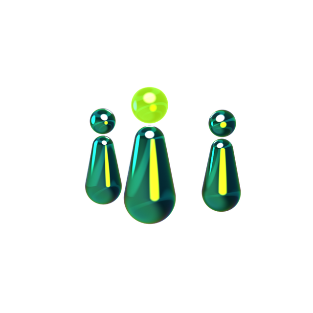
Три вживані сервери, маршрутка й перші DDoS-атаки
В основі компанії Godlike.host — болісний досвід клієнта. Засновник компанії Віталій, чекаючи свій сервер кілька днів, зрозумів, що ринок хостингу потребує якіснішого та швидшого сервісу. І хоча запуск відкладався кілька років, вирішальною стала зустріч за кавою з Ігорем — фахівцем з DevOps, який став співзасновником компанії.
Початок бізнесу вимагав від засновників максимальної гнучкості. CTO компанії збирав перші три вживані сервери Dell R620 вдома й віз їх до датацентру в Дніпрі звичайною маршруткою. Майже одразу почалися виклики: перші масовані DDoS-атаки та недоспані ночі, під час яких команда разом із датацентром розробляла власну систему фільтрації трафіку.
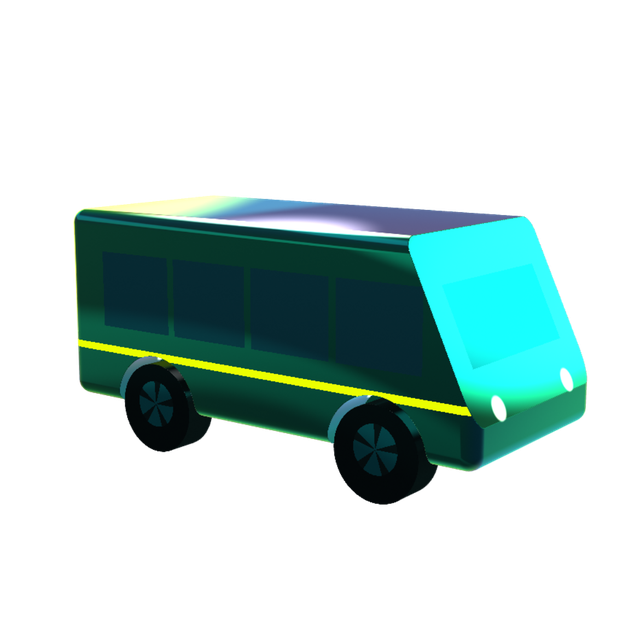
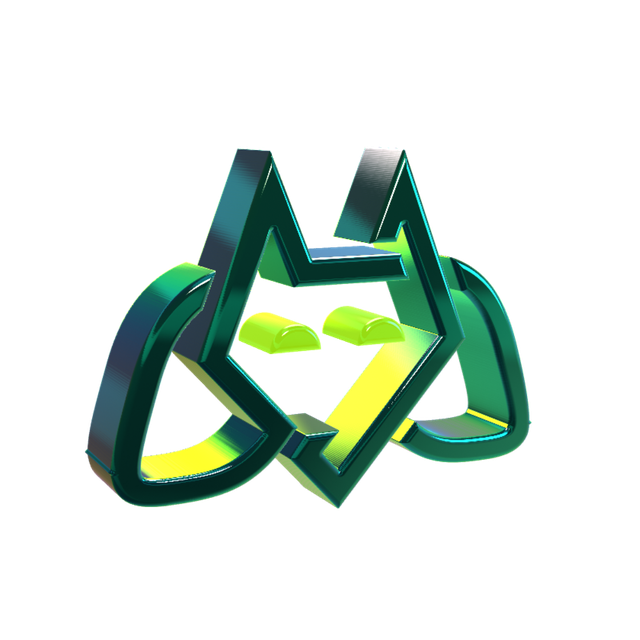
На сьогодні три вживані сервери розрослися до глобальної мережі. Коли клієнт натискає кнопку Create Server, система автоматично підбирає оптимальну локацію, виділяє ресурси й налаштовує середовище. Приблизно за дві хвилини гравець уже грає з друзями в будь-якій точці світу.
Мільйони в залізо: чому компанія зосередилася на власних серверах
Коли до компанії приєднався Олександр Якунін (нинішній CEO), команда складалася з 15 людей, а місячний оборот становив приблизно $20 тисяч. За рік процеси перебудували, подвоїли команду й збільшили оборот у 10 разів.
Один із ключових переломних моментів — перехід на власне обладнання замість оренди. Два роки Godlike спрямовував усі вільні кошти та залучені ресурси на купівлю серверів і розгортання локацій у датацентрах по всьому світу, працюючи на межі рентабельності.
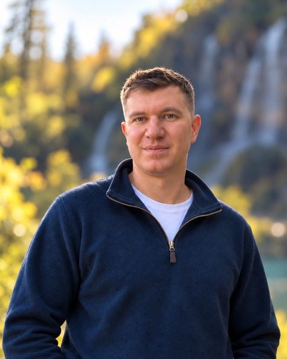
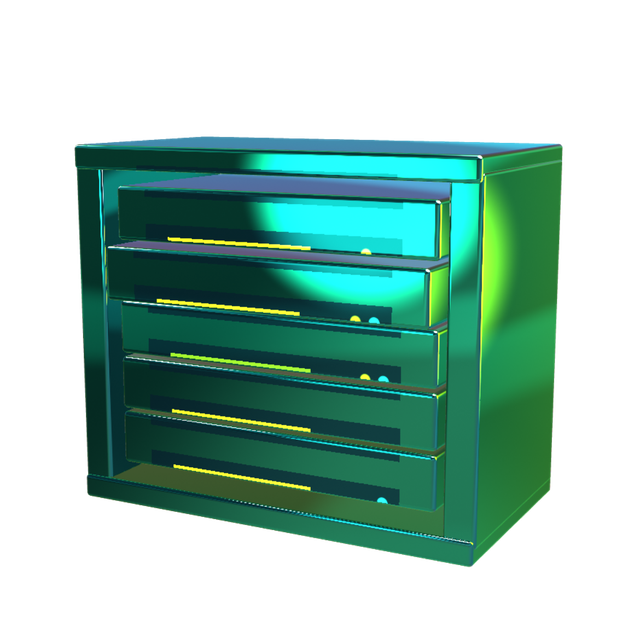
Одна кнопка та п’ять мов програмування
Філософія продукту Godlike — максимальна спрощена зовнішня панель при високій внутрішній інженерній складності. За безперебійною роботою стоять власна панель, лаунчер, автоматичні інтеграції та підтримка тисяч ігрових модів. Лише на платформі CurseForge щомісяця з’являється приблизно 5,5 тисяч нових модів для Minecraft, які часто конфліктують між собою, і завдання системи — заздалегідь перевірити їхню сумісність.
Окрім Minecraft, компанія активно розвиває VPS, виділені сервери, WordPress-хостинг і новий напрям — хостинг AI-агентів.
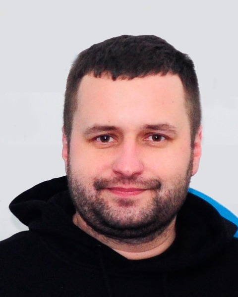
Три виклики, три рішення: як команда Godlike будує міжнародний бізнес
Щоб обслуговувати десятки тисяч клієнтів по всьому світу, Godlike обʼєднує понад 70 фахівців у кількох ключових напрямах: Product & New Products, Engineering & Infrastructure, Support & Technical Expertise, Community & Marketing (Help First, SEO, Affiliate, Reddit, Growth) та Operations, HR & Finance.
Але, замість класичних бюрократичних відділів, команда працює як гнучка екосистема. Ось три практичні приклади того, як різні підрозділи розвʼязують складні задачі та рухають бізнес уперед:
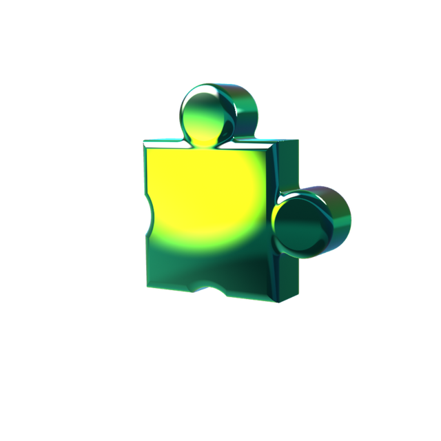
Help First
Як залучати понад 100 тисяч користувачів щомісяця, нічого їм не продаючи
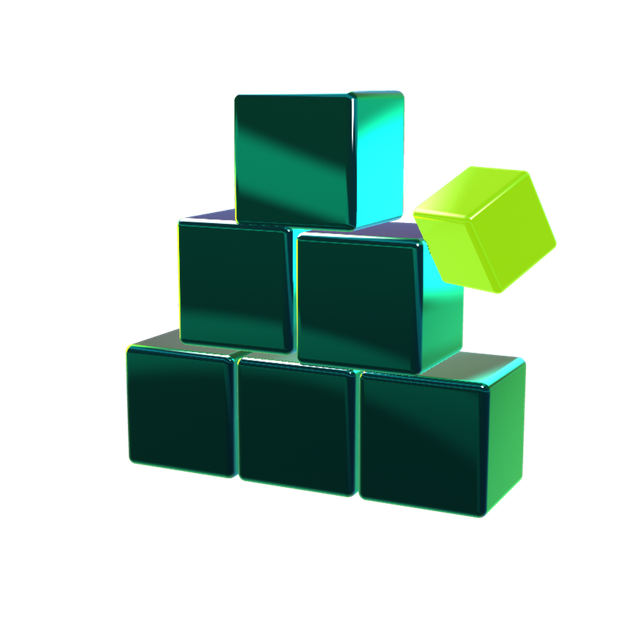
Як привертати увагу гравців, які ще не потребують хостингу, та будувати довіру до бренду без прямої реклами?
Godlike створив окремий напрям Help First, який розробляє безплатні інструменти для Minecraft-спільноти: власний лаунчер, генератор кастомних модпаків, редактор скінів і каталог сідів. Головний принцип — спочатку розвʼязати проблему гравця, а не намагатися продати йому хостинг.
Понад 100 000 користувачів щомісяця користуються цими інструментами. Частина з них згодом стає клієнтами Godlike.host, уже знаючи бренд через корисні безплатні продукти.
DevOps & Infrastructure
Як керувати 20 тисячами ігрових серверів у 13 локаціях світу
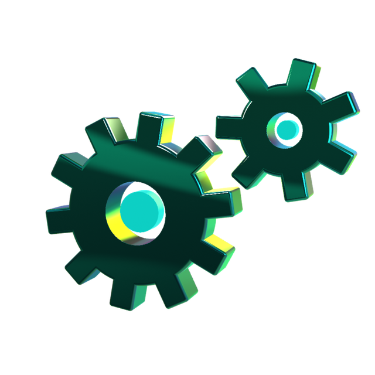
Забезпечити стабільну роботу понад 20 000 ігрових серверів на більш ніж 100 фізичних машинах у 13 локаціях. За такого масштабу навіть невеликий збій може одночасно вплинути на сотні клієнтів, а ручне управління інфраструктурою стає неможливим.
Команда розробила власну систему моніторингу й управління інцидентами. Вона відстежує стан інфраструктури, автоматично виявляє аномалії, визначає причини збоїв і запускає сценарії реагування. Частину типових проблем система усуває самостійно, а складні випадки передає інженерам разом із необхідною діагностикою.
Замість вручну контролювати сотні фізичних машин, команда побудувала інфраструктуру, здатну автоматично виявляти та частково усувати проблеми. Це дозволяє DevOps-інженерам керувати глобальною мережею серверів, швидше реагувати на інциденти та розширювати інфраструктуру без пропорційного збільшення кількості спеціалістів.
Growth & Analytics
Як аналізувати бізнес швидше за конкурентів, коли продаєш десятки хостингових продуктів у понад 100 країнах
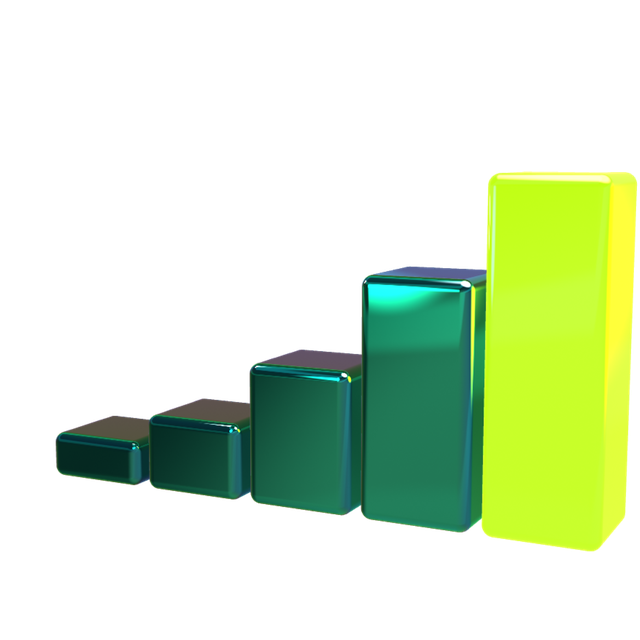
Аналізувати конверсії, ефективність реклами, економіку продуктів і результати A/B-тестів на глобальному ринку, коли дані надходять із десятків різних систем.
Команда обʼєднала дані з білінгу, Amplitude, Power BI, SEO, PPC, продуктової панелі та фінансових систем у єдину очищену аналітичну базу. На її основі створила MCP-сервер та спеціалізовані AI Skills, які дозволяють аналізувати бізнес-показники природною мовою та безпосередньо в середовищі розробки.
Кожен співробітник отримав доступ до персонального AI-аналітика, який допомагає самостійно досліджувати дані, перевіряти гіпотези та знаходити можливості для зростання без необхідності щоразу звертатися до аналітичної команди.
Як Godlike підтримує команду
Найкращий показник здоровʼя компанії — утримання команди. За останні три роки з Godlike пішли лише троє людей, і двоє з них за кілька місяців повернулися назад.
В основі культури Godlike лежать конкретні дії для підтримки людей.
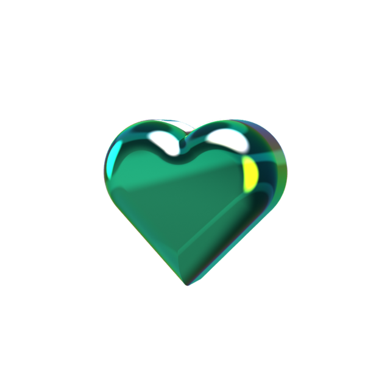
Автономність під час форс-мажорів
Під час відключень світла в Україні компанія повністю забезпечила співробітників комплектами автономного живлення (зарядні станції, інтернет-обладнання).
Ментальне здоровʼя
У штаті компанії працює професійний психолог, до якого може звернутися кожен співробітник.
Інструменти для роботи
Оплата необхідних AI-інструментів (ChatGPT Plus, Copilot тощо) й сучасного софту для автоматизації рутини.
Фінансова турбота
Повна компенсація податків, а також регулярні Performance Review кожні 6 місяців із переглядом зарплати та виплатою бонусів.
Професійний розвиток
Тимчасова ротація керівників між напрямами, що дозволяє краще розуміти суміжні відділи та усувати «силосне» мислення.
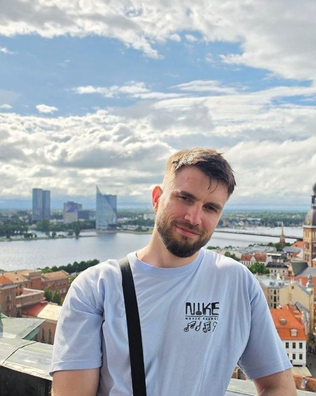
Карʼєрне зростання всередині
У Godlike цінують ініціативу й готовність рости через практичні виклики. Яскравий приклад — шлях Катерини, нинішньої COO компанії. Вона прийшла на позицію асистентки CEO, не маючи управлінського досвіду. Беручи на себе все складніші завдання: від отримання безплатної ліцензії Jira ($30 000 заощаджень для компанії) до побудови фінансових і логістичних процесів, — вона виросла до операційної директорки.
Найважчим етапом зростання виявилися не процеси, а робота з людьми та перемовини, де ключову роль відіграло менторство від засновника.
Переговорів мене багато в чому вчив фаундер. Іноді він пропонував попросити таку знижку, яку було ніяково навіть вимовити вголос. А потім ми розбирали кожну розмову: де я надто швидко погодилася, де варто було помовчати, а де — ще трохи наполягти. Ці два роки я постійно бралася за те, чого ще не вміла. Поступово моїм завданням стало бачити, де виникла проблема, і йти розбиратися», — розповідає Катерина.
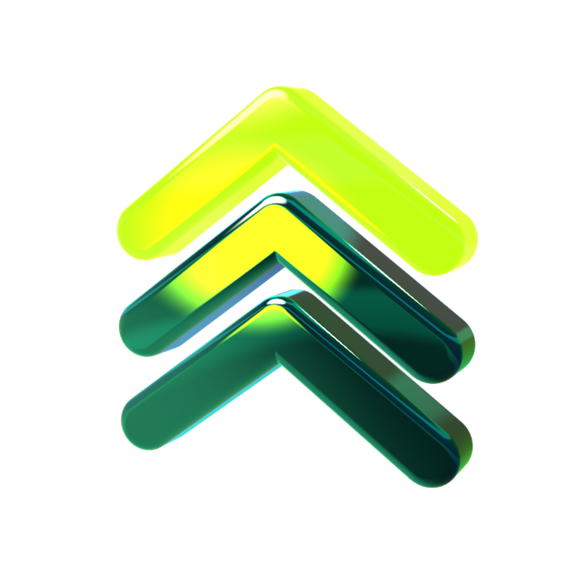
Від дзвінків до напівавтономних команд
Свого часу Godlike пройшов шлях від постановки задач телефоном до протилежної крайності — п’ятигодинних щоденних зустрічей за жорстким Scrum. Усвідомивши, що бюрократія заважає розробці, компанія впровадила фреймворк EOS (ключові показники, квартальні цілі, чітка відповідальність за результат).
Сьогодні в Godlike діють напівавтономні команди: одні працюють за Scrum, інші — за Scrumban. Рутинний контроль у Jira передали AI-агентам, що звільнило проджект-менеджерів від механічної роботи.
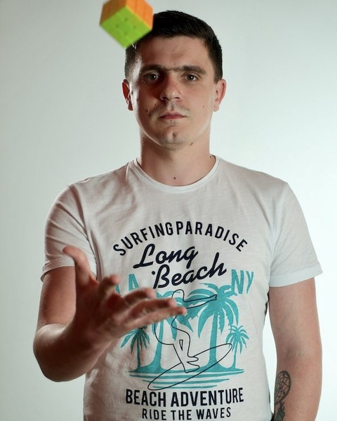
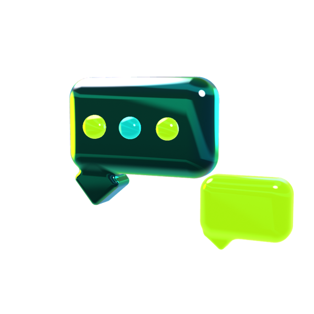
У майбутньому — більше ніж Minecraft
У 2024 році на конференції Gamescom компанія зіткнулася зі стереотипом: «Ви ж просто Minecraft-хостинг». Замість суперечок, це спостереження стало поштовхом до системної трансформації.
Сьогодні Godlike будує повноцінну екосистему: власний лаунчер, Discord-боти, грантову програму для авторів модів-початківців, а також масштабування VPS, виділених серверів та AI-інфраструктури.
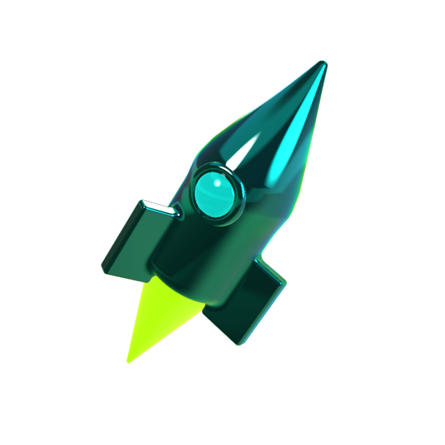